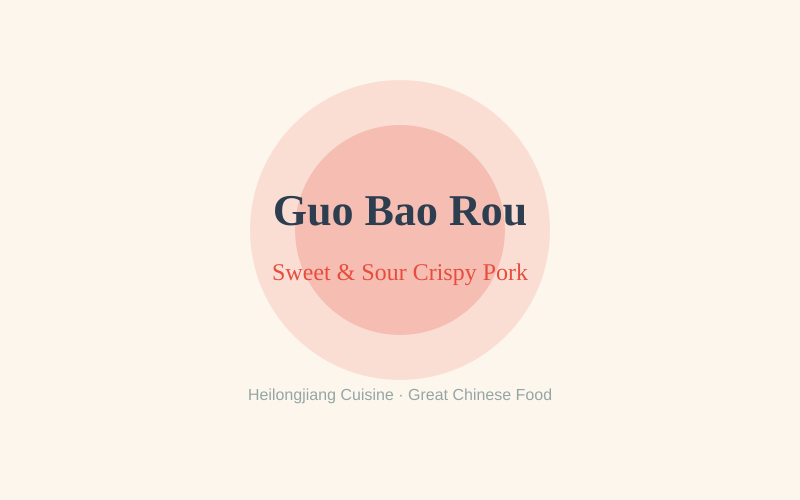
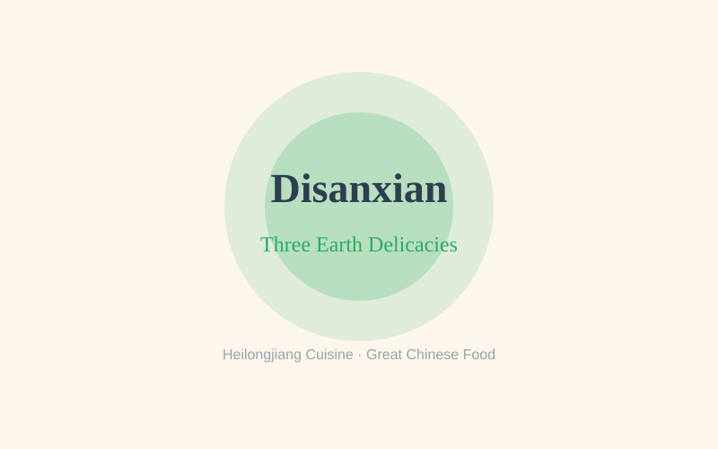
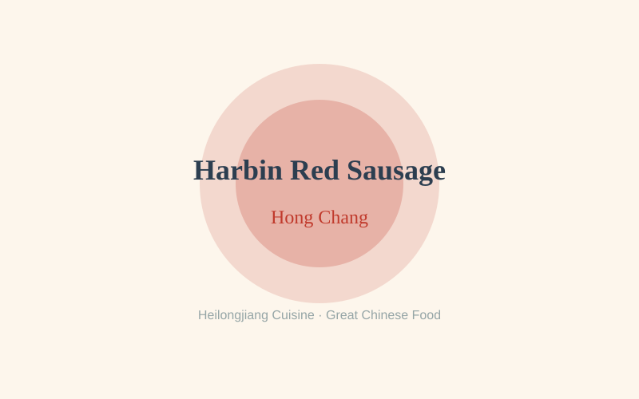
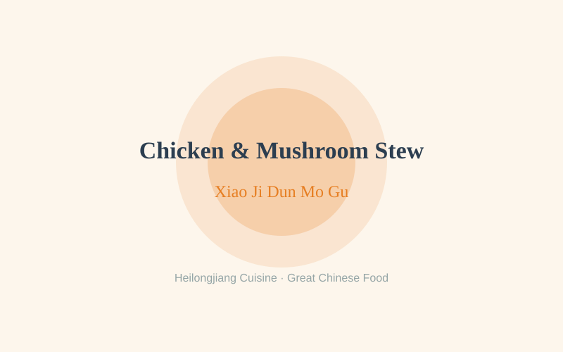

Heilongjiang Cuisine — Regional Food Guide
A comprehensive guide to the authentic flavors, signature dishes, and culinary traditions of Heilongjiang.
Signature Dishes of Heilongjiang

Guo Bao Rou (Sweet & Sour Crispy Pork)
Guo Bao Rou is Harbin's undisputed signature dish — a plate of golden, lacquered pork slices that crackles between the teeth and fills the mouth with a bright, sweet-and-sour tang. The dish begins with thin slices of pork loin, pounded, dredged in potato starch batter, and double-fried: first at a moderate temperature to set the shell, then at a higher heat to puff it into a brittle, honeycomb crust that shatters audibly on the first bite. The crisp slices are then tossed in a glossy sauce of sugar, aged vinegar, and a whisper of soy, which coats each piece like amber lacquer. Guo Bao Rou was invented in Harbin around 1907 by Zheng Xingwen, the head chef of the Daotai Fu (the Qing government's diplomatic office in Harbin), who created it to please Russian guests unfamiliar with the heavy, dark-sauced Dongbei pork dishes. The chef replaced the usual soy-heavy marinade with a delicate sweet-and-sour glaze, and the dish became an instant hit. Today Guo Bao Rou is the dish every Harbin restaurant is judged by — served piping hot at family banquets, wedding feasts, and casual lunches, best eaten immediately while the crust is still crisp and shattering.

Disanxian (Three Earth Delicacies)
Disanxian — literally "Three Earth Delicacies" — is the beloved home-style dish of Northeast China, an unassuming yet deeply satisfying stir-fry of potato, eggplant, and green bell pepper. Each vegetable is first deep-fried separately until golden: the potato becomes crisp-edged and creamy within, the eggplant turns silken and collapses into itself, and the green pepper stays vivid and slightly firm. The three are then reunited in a wok and tossed with a savory sauce of soy sauce, oyster sauce, garlic, and a touch of sugar, thickening into a glossy coat that clings to every surface. The dish's genius lies in contrast — the buttery potato against the soft, almost molten eggplant, the bright bite of pepper cutting through the richness. Disanxian reflects the agrarian soul of the Northeast, whose black-earth farmland produces some of China's finest potatoes and eggplant. Its name elevates humble vegetables to "delicacies," a nod to the region's proud, plain-spoken character. It is the quintessential "mother's cooking" — the dish that appears on every Dongbei family table, in every neighborhood jia chang cai (home-style) restaurant, and alongside a bowl of steaming rice on a cold winter evening, offering warmth that no expensive banquet dish can match.

Harbin Red Sausage (Hong Chang)
Harbin Red Sausage (Hong Chang) is the city's most famous edible souvenir — a glossy, deep-red smoked sausage that tells the story of Harbin's unique Russian heritage. Made from coarsely ground pork and beef seasoned with garlic, black pepper, and a touch of nutmeg, the sausage is stuffed into natural casings, then smoked over hardwood and fruit-tree chips, which give it its signature mahogany color and smoky aroma. The texture is firm yet springy, with a satisfying snap when bitten and a rich, garlicky, faintly peppery flavor. Red sausage arrived in Harbin in the early 1900s with Russian railway engineers and Jewish merchants who built the Chinese Eastern Railway; the local brand "Qiulin" (Churin), founded by a Russian entrepreneur, has produced the sausage since 1913 and remains the city's gold standard. Today, Harbin red sausage is eaten as a snack on the go — sliced and sold by weight in paper bags along Central Street, paired with a bottle of kvass or the city's famous Madi'er ice cream, or served as a cold cut at New Year banquets. For Harbin locals, no visit to the city, and no departure from it, is complete without a few links wrapped in wax paper.

Chicken Stewed with Wild Mushrooms (Xiao Ji Dun Mo Gu)
Chicken Stewed with Wild Mushrooms (Xiao Ji Dun Mo Gu) is the soul-warming winter stew of Northeast China — a bubbling pot of free-range chicken and earthy wild mushrooms that has fed Dongbei families through the region's brutal winters for generations. The dish pairs a young free-range chicken, cut into pieces, with hazel mushrooms (zhen mo) harvested from the forests of the Greater and Lesser Khingan Mountains, prized for their firm texture and deep, woodsy flavor. The chicken is browned in a little oil, then simmered with the soaked mushrooms, ginger, scallions, and the mushroom soaking liquid — never plain water, which would dilute the flavor — in a covered pot until the meat falls easily from the bone and the broth turns a rich amber. A final handful of glass noodles (vermicelli) is often added, absorbing the concentrated juices. The dish embodies the Dongbei philosophy of "sweep-the-pot" communal eating: a single large pot, kept bubbling over the table, into which diners add cabbage, tofu, and more noodles as the meal progresses. It is the centerpiece of family reunions, Lunar New Year feasts, and any winter gathering, when the temperature outside drops below -20°C and a steaming pot of chicken and mushrooms becomes the warmest welcome imaginable.
Food Culture of Heilongjiang
Situated in China's far northeast, Heilongjiang is the country's coldest, most northerly province, and its cuisine — part of the broader Dongbei (Northeast) culinary tradition — is shaped above all by climate. With winters that plunge below -30°C and a short but intense growing season, Heilongjiang cooking is hearty, generous, and built for survival: large portions, slow-simmered stews, pickled vegetables, and ingredients that could be stored through the long freeze. The province's black-earth farmland yields some of China's finest potatoes, soybeans, corn, and cabbage, while its forests and rivers supply wild mushrooms, hazelnuts, and freshwater fish. Harbin, the provincial capital, adds a uniquely cosmopolitan layer — founded in 1898 as a stop on the Russian-built Chinese Eastern Railway, the city absorbed waves of Russian, Jewish, and European immigrants whose influence is still visible in its architecture, its bread, its kvass, its sausages, and its love of dairy. Heilongjiang's food culture is unpretentious and convivial: meals are communal affairs served in generous portions, flavored with the region's characteristic sweet-and-sour, salty, and garlicky profiles, and built around the belief that a full pot and a warm room are the truest expressions of hospitality in a land defined by winter.